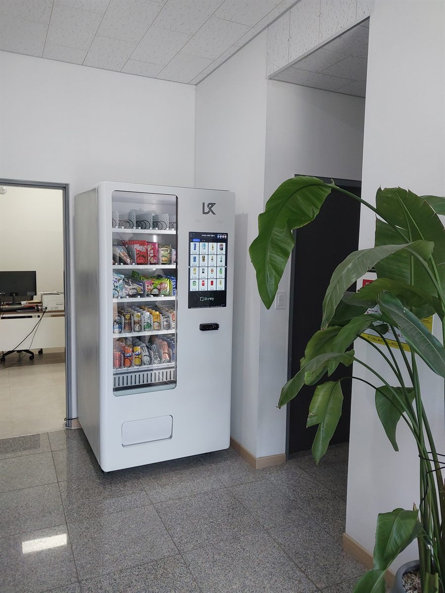

지식산업센터는 한 건물 안에 회사가 수십 곳 들어가 있는 구조입니다. 그래서 자판기를 놓을 때 생각할 것이 일반 사무실과 다릅니다. 한 회사의 탕비실을 채우는 일이 아니라, 층을 함께 쓰는 여러 회사의 공통된 걸음을 한 자리로 모으는 일입니다. 점심 뒤에 음료 하나 사려고 1층까지 엘리베이터를 기다려 내려갔다가 다시 올라오는 시간이 얼마나 되는지, 그 걸음이 하루에 몇 번인지가 자리의 값어치를 정합니다.
자리를 정할 때 가장 먼저 본 것은 누구의 자리도 아닌 공간인가였습니다. 특정 호실 문 바로 앞에 놓으면 그 회사 물건처럼 보여서 다른 층 사람이 쓰기를 꺼립니다. 이번 현장에서는 엘리베이터 홀에서 복도로 꺾이는 벽면을 잡았습니다. 내리는 사람과 계단으로 오르는 사람이 모두 지나고, 어느 호실에도 붙어 있지 않은 자리입니다. 그다음이 전원이었습니다. 복도 콘센트는 청소기나 조명을 위해 얇게 잡혀 있는 경우가 많아, 냉장 압축기를 하루 종일 돌리기에 맞지 않습니다. 관리사무소와 도면을 함께 보고 공용부 별도 회로에서 끌어왔습니다. 마지막이 바닥 수평입니다. 석재 타일 바닥은 평평해 보여도 줄눈을 지나며 미세하게 기울어 있어, 앞다리 높이를 맞춰 문이 저절로 닫히거나 열리지 않도록 잡았습니다.
인천 지식산업센터에 맞는 구성
기계는 한 대만 놓았습니다. 복도는 피난 통로라 폭을 좁히면 안 되고, 층마다 드나드는 인원이 정해져 있어 두 대를 놓아도 회전이 두 배가 되지는 않습니다. 대신 한 대 안에서 칸을 나눴습니다. 위쪽 두 칸은 과자·빵·젤리 같은 간식, 아래 두 칸은 생수·탄산·커피·이온음료로 냉장 칸을 채웠습니다. 사무실 건물은 여름에도 겨울에도 실내 온도가 일정해서 계절에 따른 품목 변동이 상가나 야외 자리보다 훨씬 적습니다. 한번 잘 맞춘 구성이 오래갑니다.
품목은 시간대를 보고 짰습니다. 사무실 건물의 자판기는 하루에 세 번 움직입니다. 출근 직후의 커피, 점심 뒤의 음료, 오후 서너 시의 간식입니다. 그래서 커피와 생수 칸을 가장 넓게 잡고, 늦은 오후를 위한 단 간식을 그다음으로 뒀습니다. 결제는 카드와 삼성페이·카카오페이·네이버페이를 받게 하고 현금함은 넣지 않았습니다. 직장인이 쓰는 자리라 현금을 꺼내는 일이 거의 없고, 현금함이 없으면 수금하러 갈 일도 사라집니다. 재고와 시간대별 판매는 휴대폰 앱으로 봅니다. 어느 칸이 먼저 비는지는 며칠이면 눈에 보이기 때문에, 그때 칸 배분을 한 번 더 조정하시면 됩니다.
지식산업센터 자판기, 좋은 점과 어려운 점
좋은 점은 이용하는 사람이 정해져 있다는 것입니다. 지나가는 사람이 아니라 매일 같은 시간에 같은 자리를 지나는 사람들이라 판매가 요일과 시간대별로 규칙적으로 나옵니다. 며칠만 지나면 언제 채우러 가야 하는지 감이 잡히고, 헛걸음이 줄어듭니다. 실내라 기계가 상하지 않는 것도 큽니다. 비바람과 직사광선을 타지 않고, 건물에 출입 통제가 있어 파손이나 도난 걱정이 거의 없습니다. 주말에 비는 대신 평일이 확실합니다. 주말 매출을 기대할 자리는 아니지만, 평일 다섯 날의 흐름이 안정적이라 계산이 단순합니다.
어려운 점도 그대로 적겠습니다. 첫째는 동의를 받는 절차입니다. 복도와 엘리베이터 홀은 공용부라 관리단이나 입주자대표회의의 동의가 있어야 합니다. 전기를 어디서 끌지, 수익을 어떻게 볼지까지 정해야 해서 설치 자체보다 이 과정이 더 오래 걸리는 경우가 많습니다. 둘째는 한계가 분명하다는 점입니다. 층 인원이 정해져 있어 아무리 잘 돼도 그 이상은 올라가지 않습니다. 욕심내어 큰 기계를 넣기보다 자리 수를 늘리는 쪽이 맞습니다. 셋째는 주말과 연휴입니다. 금요일에 유통기한이 짧은 것을 가득 채우면 월요일에 손해가 납니다. 넷째는 소음입니다. 사무실 건물 복도는 조용해서 냉장 압축기 소리가 생각보다 크게 들립니다. 회의실이나 사무실 출입문 바로 옆은 피해야 하고, 이번에도 그래서 엘리베이터 홀 쪽 벽을 골랐습니다.
인천 무인매장, 이런 자리가 잘 됩니다
인천은 산업단지와 신도시가 한 도시 안에 같이 있는 곳입니다. 그래서 자판기 자리의 성격이 구마다 완전히 다릅니다. 남동구는 남동국가산업단지가 있어 인천에서 문의가 가장 많은 구역입니다. 고잔동·남촌동 일대에 중소 제조업체가 밀집해 있고, 그 사이사이에 지식산업센터와 사무동이 들어서 있습니다. 교대 근무가 있는 사업장이 있어 야간에도 사람이 있는 휴게실 문의가 꾸준합니다. 같은 구의 구월동은 성격이 반대입니다. 인천광역시청과 로데오거리, 인천터미널이 모여 있는 인천의 중심 상권이라 학원·스터디카페·헬스장이 상가 건물 층마다 들어가 있습니다.
부평구는 부평역을 중심으로 오가는 사람이 두껍고 부평국가산업단지와 부평문화의거리가 가깝습니다. 오래된 상가 건물이 많아 반입 경로를 미리 확인해야 하는 곳이기도 합니다. 연수구 송도국제도시는 새로 계획해 지은 구역이라 업무용 빌딩과 연구시설, 대학이 넓게 퍼져 있고, 건물이 커서 한 건물에 여러 대를 놓는 상담이 자주 나옵니다. 서구는 청라국제도시와 검단신도시가 한창 채워지는 중이라 새 근린상가와 오피스텔이 계속 늘고, 새 건물이라 전원과 반입이 깨끗해 설치가 빠릅니다. 중구는 인천국제공항과 영종도 쪽의 호텔·물류 시설, 그리고 차이나타운·월미도·연안부두 같은 관광 구역으로 나뉘어 평일과 주말의 사람 수가 크게 다릅니다. 계양구와 미추홀구는 주거와 학원가가 촘촘히 섞여 있어 실내 대기 공간이 있는 건물이면 대부분 자리가 나옵니다.
인천 서비스 지역
중구 — 신포동 · 연안동 · 신흥동 · 도원동 · 율목동 · 동인천동 · 개항동 · 영종동 · 운서동 · 용유동
동구 — 만석동 · 화수동 · 송현동 · 송림동 · 금창동
미추홀구 — 숭의동 · 용현동 · 학익동 · 도화동 · 주안동 · 관교동 · 문학동
연수구 — 옥련동 · 선학동 · 연수동 · 청학동 · 동춘동 · 송도동
남동구 — 구월동 · 간석동 · 만수동 · 서창동 · 논현동 · 고잔동 · 남촌동 · 도림동
부평구 — 부평동 · 산곡동 · 청천동 · 갈산동 · 삼산동 · 십정동 · 부개동 · 일신동
계양구 — 효성동 · 계산동 · 작전동 · 서운동 · 임학동 · 병방동
서구 — 검암동 · 연희동 · 청라동 · 가정동 · 석남동 · 가좌동 · 당하동 · 원당동 · 마전동 · 불로동
강화군 · 옹진군 도서 지역도 일정을 조율해 나갑니다.
역 — 인천역 · 동인천역 · 주안역 · 부평역 · 계양역 · 인천시청역 · 인천터미널역 · 운서역 · 인천공항1터미널역
주요 구역 — 남동국가산업단지 · 부평국가산업단지 · 송도국제도시 · 청라국제도시 · 검단신도시 · 구월동 로데오거리 · 인천항 연안부두 · 월미도
인접한 서울 강서구 · 양천구 · 구로구와 경기 부천 · 김포 · 시흥까지 같은 조건으로 나갑니다.
인천 무인창업, 이렇게 시작하시면 됩니다
설치비는 받지 않습니다. 자리 확인부터 품목 구성, 기계 반입, 카드 결제 연동, 재고 채우는 방법까지 한 번에 안내해 드립니다. 지식산업센터나 업무용 빌딩처럼 공용부에 놓는 자리는 관리사무소와 먼저 이야기해야 하므로, 동의를 받는 데 필요한 자료를 저희가 정리해 드립니다. 견적 전에 확인하는 것은 전기 회로·복도 폭·엘리베이터와 출입문 폭 세 가지입니다. 특히 고층 건물은 화물용 승강기 운행 시간이 정해져 있는 경우가 있어, 이 확인이 빠지면 설치 당일에 일이 멈춥니다. 자리 사진 한 장과 대략의 복도 폭만 보내 주셔도 들어갈지 아닐지는 미리 봐 드립니다.
비용은 구입이 렌탈보다 유리한 편입니다. 렌탈료를 몇 년 내는 것보다 처음에 사 두는 쪽이 총액이 낮게 나오는 경우가 많고, 오래 쓸수록 차이가 벌어집니다. 한 건물에 여러 대를 놓으시는 경우라면 차이가 더 커집니다. 구성별 36개월 총비용은 구입 vs 렌탈 비교 가이드에 정리해 두었습니다.
인천 무인자판기 설치 상담
세워 둘 자리 사진 한 장만 보내 주셔도 됩니다. 남는 벽과 전기 회로, 복도 폭과 반입 경로를 보고 들어갈 수 있는 크기를 먼저 봐 드린 뒤 견적을 보내 드립니다.
※ 사진은 픽포스가 시공한 설치 사례이며, 글에 적힌 지역의 현장 사진은 아닙니다. 자판기 구성과 품목은 자리와 업종에 따라 달라지며, 지식산업센터·업무용 빌딩의 공용부 설치는 전기 회로 여유와 반입 경로, 관리단·입주자대표회의의 동의 조건을 현장에서 먼저 확인합니다. 정확한 금액은 견적서로 안내드립니다.